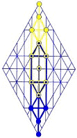

|
||||||||
| Earth | Water |
|
Air | Fire | ||||
With consent, man is
buried in Earth unto the release
from the amniotic fluids of
the mother's womb at physical birth.
By choice, man may
submit to burial by water immersion, unto remission of sin.
fulfilling
all righteousness by acknowledment of error, he is again born,
raised f rom the waters of Earth as a new creature
Having gained
acceptance and congruence with the Spirit of HaShem,
the new creature is welcomed among the elect and isfurnished unto all good works,
charged with sharing the bounty of God's Breath as led Immanual,
the indwelling Shepherd.
Walking among men as did brother Y'shua, before
him,
he is bathed in the Fire of Wisdom, unto perfection.
On the path of the cross, vestiges of the old garment are burned
away
and are replaced with the spotless garments of the
saints.
In
form and in substance, humans are Creation’s most exotic species of
caterpillar. The earthly worm's life cycle is a metaphor for the path of
Man, as he makes his circuits between Heaven and Earth. Only a little
lower than God's messengers, each of us retains his roots among the angelic hosts of Heaven,
during incarnation, turning the world upside down.
Incarnating to live and die as men, angels surrender immortal
wings in exchange for mortal bodies, in answer to the judgment of HaShem
and the arc of his Wisdom.
We didn't
entirely forsake angelic identity: that which is below is a
reflection of that which is above; and though the gulf between
the two is vast, the connection is never lost. Thus, it is
written, "Lo, I am with you always"; for always, even at our
worst, the angelic root of our souls remains in heaven, gazing
upon the faces of the Father, continually.
{kind=link}
Imperishable grubs of heavenly Fire, we set immortality aside so that we could experience spiritual transformation, for which purpose Earth was created. Earth (xra) is an isolated location for the expansion a of knowledge r through victorious transformation x. We are not sent to Earth as punishment for misdeeds, though many are born into punishing environments and lead punishing lives, but to discover our roles as co-workers with the Father in the Kingdom of Names. We're here to overcome the vestiges of iniquity found in us; for the heavens are not clean in the sight of the Creator. This victory will be achieved, not by our might nor by any power we might claim as ours, but by the Grace of God.
The Father drives
out those things that offend, exposing them for our
consideration. Repenting of both offense and the guilt it
conveys, we enter into the Father's rest; and as we continue in
that rest, we grind every imperfection under our heels
as we tread the pathways of Life in the footsteps of
Y'shua.
Come the
Jubilee at the turning of the age, we will celebrate our Earth
journeys
with dry eyes; for we shall no
longer walk as homo sapiens, nor even as victorious angels, but as Sons of Man, the Children of God.
The Breath of Life carries the spark of Divine Fire
a.
Through Adam, that Life Spark fragmented and showered among and within us all,
coming to rest in our bloodstreams
md,
where it sustains physical life in its dance with the fires of
the metabolism.
The
Life that infused Adam with the Father's Spirit has engulfed
the Earth like wildfire, passing from fathers to children by means of mothers.
Thus, like father Adam before us, we became living souls with our first gasp
as infants. Our lives fanned by the Breath at all times, the
Life Spark
remains hidden within us until we’re called by the Presence to
separate ourselves unto the work of God’s Kingdom. At that time, the
Father must make
himself known; for the oxen that
tread the corn are not muzzled.
The Presence, as though faceless, is hidden from us, so long as we are under the captivity of darkness. When called to our separate services in the Kingdom, however, the Presence reveals itself and charges us with the cleansing not only of ourselves, but of all we touch in every realm, as we are enabled in times of cleansing by the will and power of God. On our own, on behalf of ourselves or others, we cannot make one hair white or black. The cleansing is the work of the Holy Fire of HaShem, which bathes us as we walk in him and, without agenda of our own, as him.
If we had reason to mention
God in our darkest times, we did so by his titles, not
by his Name; for we did not know him. The wise among us, believing in
him who they did not know, used such titles as
Immanual, meaning
“God with us.” In due course, however, the Father enlarged our hearts,
or will yet enlarge them, lifting up our vision so
that
the
King of Glory, with his faces, might fill our conscious thoughts, revealing the
Presence of the Name in ordinary matters. Messiah does not come to us as from without,
as is often taught, but
from within. Once hidden in the thick darkness of our
hearts, ImmanuAL arises in us, driving out darkness by alerting our thinking
minds to the merciful works of his Presence.
Messiah is
with us always: even to the end of our trials on Earth;
HaMashiyach is
with us and can be
found at all times among the least of his servants, as among the greatest. The Shepherd King stands
in perpetuity at the door of
every heart and
mind, knocking: awaiting the householder's call for him to part veils
and share his thoughts; for Messiah is
meek, and lowly of heart. If we hear him at the door and answer, he is
pleased to reveal himself from within ourselves, filling our hearts and
our minds with perfect measurements of our own realities and of those
things we need to understand.
That he is meek detracts nothing from his power; for Messiah is the
Angel of the Presence that shook Mt. Zion so dramatically in the days of
Moses. The Word of HaShem unto Y’SharAL, Messiah thundered with the
Voice of Heaven to those who had fled Pharaoh into the wilderness. A
modulation of the Primal Utterance that created the universe, the thunders of the Big Voice were reported by Moses; and those words are now coming
into a clearer focus in the minds of fathers and sons who share access to the Small Voice,
whose manner was demonstrated by
Y’shua. Every bit the Angel of the Presence when he knocks so patiently
upon our hearts, Messiah chooses not to thunder; but rather, to whisper
in the Small Voice, which is carried by soundless vibrations the human
form can often feel but cannot hear.
As mighty Savior and Lord of Hosts, HaShem is known as hwhy, his Name of Covenant; for it is promise that the one who Gives y Life h will sustain w Life h. The Holy Name of hla should never be spoken carelessly aloud, nor used proudly or coyly to convey personal familiarity; for HaShem is not a man to be summoned, nor is he a club to be wielded in the boastful interactions of one man against another. Whether by the Voice that thunders or by the Small Voice that woos, the Father quickens his Life Spark within us, whetting the spiritual capacities of our vision, that we might learn of him in the course of our natural lives by doing those things given into our hands.
Man’s Breath is the Life Spark of Father
hy,
who does all things well. A refining Fire, the Breath of Life was not a
column of thoughtless air. The very Life of HaShem YHWH
was projected into prototypical Man. Adam is called “the Son of God”
because he was begotten by the Life that is in God.
The Breath contained the pattern—the Logos, the Word—of God’s Life; for the Words of Creation carried God’s thought, which was that Man should live, his generations stretching into eternity. Because the Presence was projected into Man, the Life Breath is called owcwhy—Yahoshua, the “Cry of God,” as usually interpreted. I understand the name Yahushua to connote “the Battle Cry of God”; for the Life Spark of Father hy rode upon HaShem’s fearsome Breath of Life, empowering Man throughout his generations.
HaShem does all
things well. Aware of that which would come to pass, God released
his Breath into the helpless man of dry earth, knowing his Word would not fall to
the ground in vain, but would accomplish that which he intended, which
is eternal Life. Earth will be inhabited so long as is expedient. When all have been raised up without spot or
blemish on that last day, the last mortal to reach perfection shall
exchange corruptibility for incorruptibility. A New Heaven and a New
Earth will have been created, and Heaven’s hosts will
bow before that last victorious man as he is ushered before the Throne.
In answer to every
prayer, the crowning of the last man will signal a great beginning
within Eternity.
Woe to those who imagine eternity without loved ones who
had become bound by
errors from which they couldn’t escape in a single life: errors whose
complexities and heartaches reached across centuries, injuring thousands through
chained interactions. Doctrines of eternal hell accuse God of either incompetence or
sadism. Those who believe in damnation are blinded by
fear, and when they receive guidance by means of the angels of God, they challenge
the messenger, whether spirit or fellow man, to see whose side they’re on. Probing with busybody
minds, they claim authority to test the spirits. Test? Yes, but
from within
the Spirit of Truth, not by doctrines of clerics or consensus of
the flocks! May the meek be multiplied, lest the angel on Jordan’s banks
again lament, saying, “Nay, but as captain of the hosts of
hwhy
am I come.” HaShem comes to save, not to destroy.
Death is illusion generated by the experience of passing from realm to realm. Neither a finishing end nor a wholly new beginning, physical death is a phase in our lives as Sons of God. The victories death seem to have, as we consider the passing of so me result from misunderstandings of the nature of our lives on Earth. The angelic worm of fire agrees to enter the cocoon of mortality by means of the mother’s womb, in which the fetus is much like a pupa. Physical birth and the journey through adolescence is the life of the caterpillar, which prepares us for the cocoon of adulthood, during which we build celestial bodies for our souls. Should we build to perfection, we have no more reason to go in and out; but if we build to imperfection, we must be born again as the wheel of life turns forward.
The fires of Earth consume, whereas the Fire of Heaven bathes. Before we came to Earth to live and die as men, we bathed in Heaven’s sacred Lake of Fire, by which we were cleansed and renewed in preparation for our lives on Earth; but the trauma of incarnation made us somewhat forgetful of our origins. Further, when stumbling in the awkward infancy of a newborn, we had to wrestle with the sluggish energies of the temporal plane of Earth. Nevertheless, we never fully forgot that, in dying to angelic realities, we had taken a step in faith; for we believed that, by means of the falling away, we had gained the potential of becoming so much more. Sons of men we might be, but Sons of God we would be!
We’re magical beings in earth-bound states of suspension because, from the beginning, we embraced erroneous understandings about the nature and purpose of the quantum reality of which we have part. This was not our fault. There were features and operations built into Creation that were not, in themselves, perfect, but which worked towards perfection in those whom they affected—much as is understood in the mathematical operations of pi. In recognition of this complicating factor, Ezekiel was instructed to include the measurement of a hand’s breadth in the measurements for the spiritual temple HaShem is now building within the inward City of David.
Cocoons are chambers of death and rebirth. When they no longer serve, we will shed a final cocoon of potentiality. In perfect alignment, one with another and with the Spirit of Truth that unites us, we shall beat our wings. Arising within the Breath of God, we will take flight, to settle, at last, in the gardens that surround the House of David dwd.
David’s name suggests the pattern of an ordinary man—a shepherd, who lives his life in a cocoon d that will empty w into another cocoon d, suggesting a continuing process that will come to an end only when portal d becomes united w with Portal d, at which time the butterfly dwd stage of life will begin, the holy life of the anointed ones within the royal line of David, the king.
{kind=link}
Whatever our stations in life, both Moses and Y’shua instructed us to call upon the Father’s Name. With no other god before us, we boldly stand before the throne of Grace, laying claim to the abundance of the Life that is in hwhy, that we might be permitted to share eternity as members of the mystical body of Yahushua HaMashiyach, each in his order as he follows Y'shua on the path to Golgotha.
The
path of the cross is a single event watched over by faithful Father
hy;
but in the minds of Man, the walk that leads to salvation in the steps
of Messiah is a process. We who walk that path trace drag marks
left by those whose
crosses have preceded us, as each of us makes his
own way to the hill of thieves. Though not in agreement as to its particulars, reincarnation was a given
in the eyes of the world Y’shua addressed. He said nothing against it;
nor did the apostles, if truth be told. Y’shua mentioned that there are
many mansions to challenge both knowledge and faith. The tumult
of planet Earth cannot define the Father, nor can it seal its catastrophic end.
By the fruit, we will know God’s goodness: I know I will be perfected, if only because my loss would justify detractors who would brag forever about that pesky fellow who got himself damned just to make the Father look bad.
It’s really
good news that Creation is not imprisoned by its own
mechanics. We don’t have to undergo physical death to be born again. We
can be reborn at any time through realizations. The Father can
add unto the Life that is in us, already, by opening the doors of
our hearts. As we realize that—together—we comprise the temple of
ImmanuAL, the Holy One of Y’SharAL, all constraint begins to fall away;
for the Holy of Holies, with its Mercy Seat, is within our souls as we
now are; and it’s God’s good pleasure to meet with us, and to sup
with us, that we might reason together concerning that which we must
become.
Doctrines of damnation lie; for God’s fervent
love will purge, purify, and perfect us all: each, in his order. As the
future is child of the past, so none of us may ascend but those of us
who have, first, descended.
Elijah’s return to serve on the banks of
Jordan was not unique. We’ve all made the journey, having gone in and
out many times. We're living creatures that have been clothed in a succession of
mortal souls in order to become worthy of an immortal
soul. Merciful by nature,
hwhy
redeems the past, creating all things new at every instant, to the end
that his Projection—his Expression, his Son, his Life—may expand to fill
all in all.
In the Garden of Eden
ndoh ngh,
wheels turn within wheels: the spiritual energy
h
generated by their turnings
g
can be recognized
n
and examined
h.
It pools within the chakras
o
at the hearts
d
of individuals
n,
as the energy
h
of the body’s nervous system
g
arises to nestle
n
within the celestial energy
h
of heavenly Eden
o.
The East calls this transmutation of energy from the physical to the
spiritual, and back again, the kundalini awakening. Its path of rebirth
is foundational
d
to the manifestation of the Sons of Man
n.
To confess
h
errors and missteps
g
with sincere repentance will result
n
in inspirational relief
h
to ease
o
the more painful
d
contractions
n
of the birthing
h
process g.
The families of Man
n
live lives
h
bursting o
with love
d
that is unexpected, unforeseen
n.
Gematria
187
zpq:
The Garden is a restful shelter
q
accessible
p
to all being lifted towards perfection
z
.
Numerology
61
as
>
16
wy
>
7
z:
The stresses
s
of concentration
a
offer but little help
y
as we consider
w
the import of words
z:
it’s the operations of divine grace within cycles
s
of inspired growth
a
that brings
y
the
heavens
w
nearer z.
Targum:
Spectacular
h,
the chariot
g
of the Deliverer
n!
Its glistening
h
wheels encompass
o
the hearts
d
of Sons of Man
n;
for the day
h
the chariot arrives
g
will signal the winnowing
n
of Earth
o
upon the threshold
d
of promise
n.
| Adam | ||
|
site |
TrueType Font |
book |